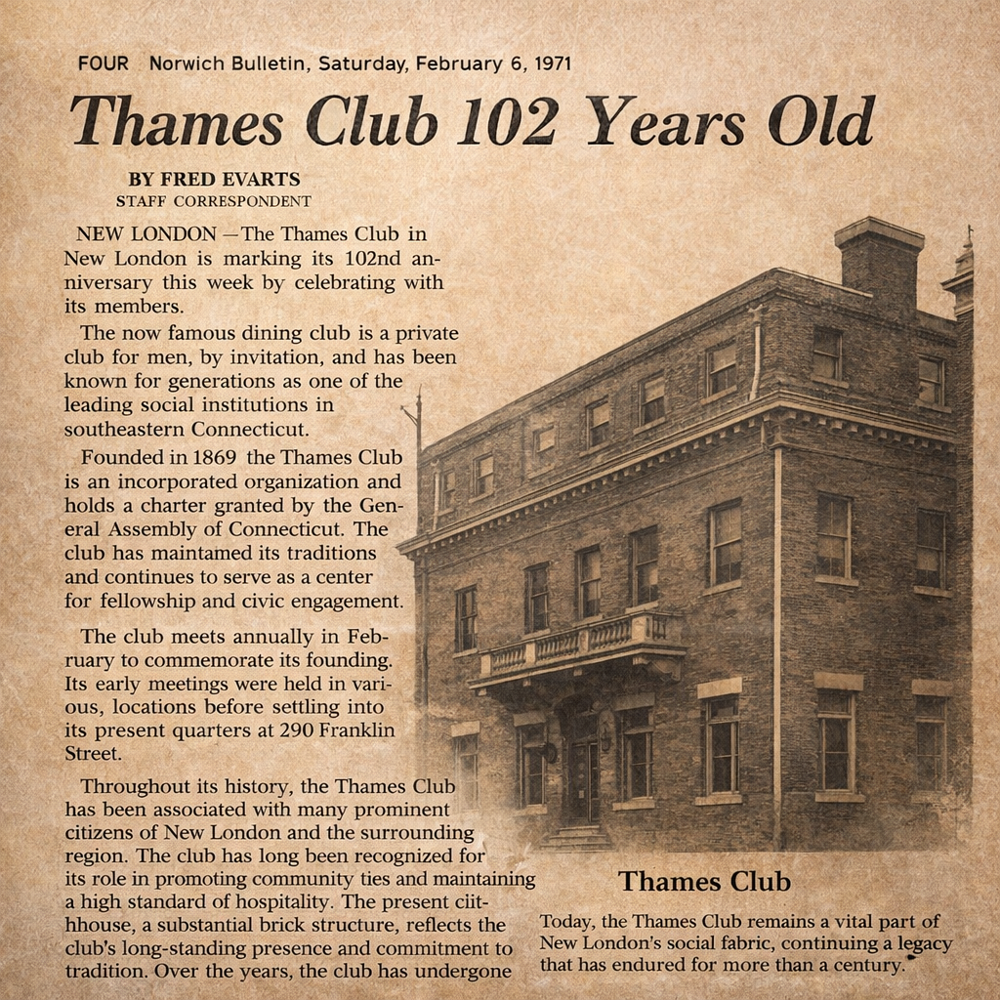

President of the Thames Club
I came to New London the way most of us do - orders in hand, a family to settle, and not much time to think about whether this was home or just the next assignment. That was the submarine life. You went where the boats were.
The boats were here.
I spent my years in the Navy working on reactors. Not a job that invites casual conversation at dinner parties, but one that demands everything you have - precision, patience, a willingness to be responsible for things that cannot go wrong. You learn, in that environment, that the man next to you is all you have. Rank matters. Competence matters more. And what a person carries inside them - their character, their steadiness - matters most of all.
It was law school next and after retirement I found my way to the public defender's office. Different uniform, same instinct: stand next to the person who needs someone standing next to them. The work was hard and often thankless and I would do it again.
New London had become home by then. Not because orders kept me here, but because the city had gotten into me the way certain places do - quietly, without announcement, until one day you realize you're not passing through anymore. I got involved with Church of the City. I found community there, and responsibility, and the particular satisfaction that comes from showing up consistently for something larger than yourself.
The Thames Club came later, and it surprised me. I'll be honest - when I first crossed that threshold, I wasn't sure it was my kind of place. Old building, long history, the weight of a hundred and fifty years in the woodwork. But what I found inside was something I recognized from the boats: people who took their obligations seriously and didn't make a production of it. People who showed up.
I became president. I'm still not entirely sure how that happened, except that I've never been good at standing on the sideline.
If you're new to this area - if the Navy or Electric Boat, Dominion or Offshore power; science, medicine, law or commerce; the work that defines this region has brought you here - I want you to know something. This community is deeper than it looks from the outside. The river, the base, the yards, the hospital, the neighborhoods - they have been shaped by people like us for a very long time. We are part of that history whether we know it yet or not.
The Thames Club has been here since 1869. It has seen a great deal. It is not a museum, though - it is a place where people gather, eat, argue, laugh, and occasionally bowl badly. It is, in the oldest sense of the word, a club: a place that belongs to its members, and whose members belong to each other.
Come and see it. Sit at the bar. Stay for lunch. The walls have stories, and so do the people who walk past them every day.
So do you.
